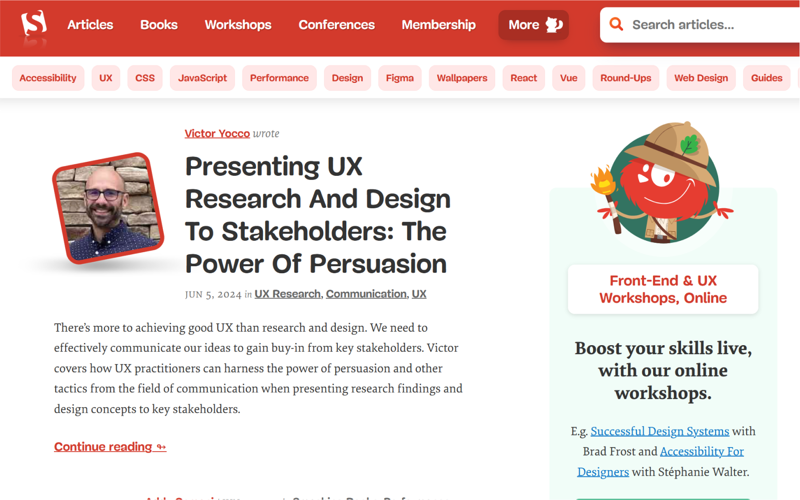
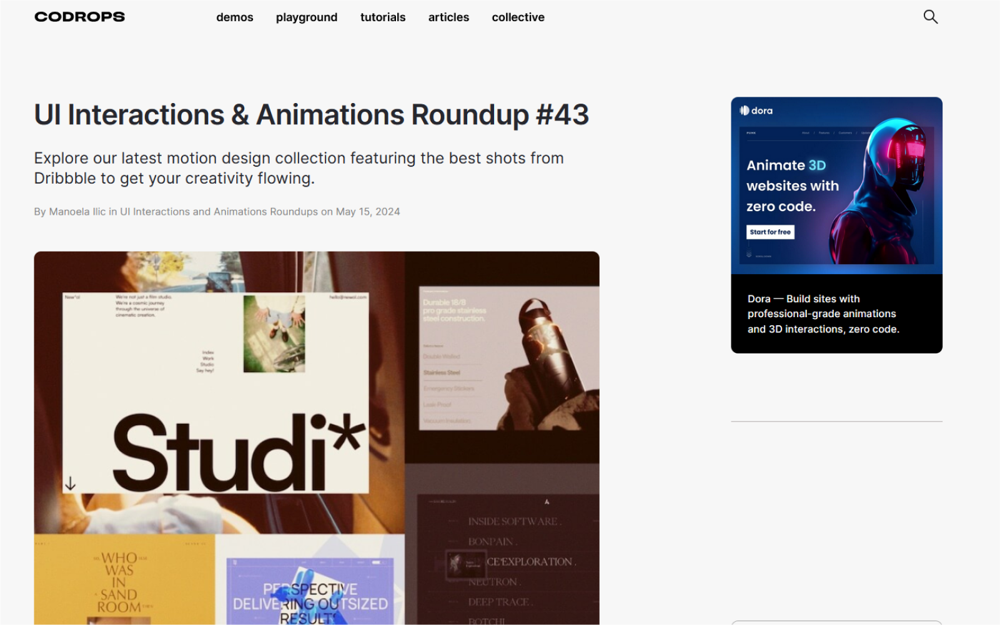
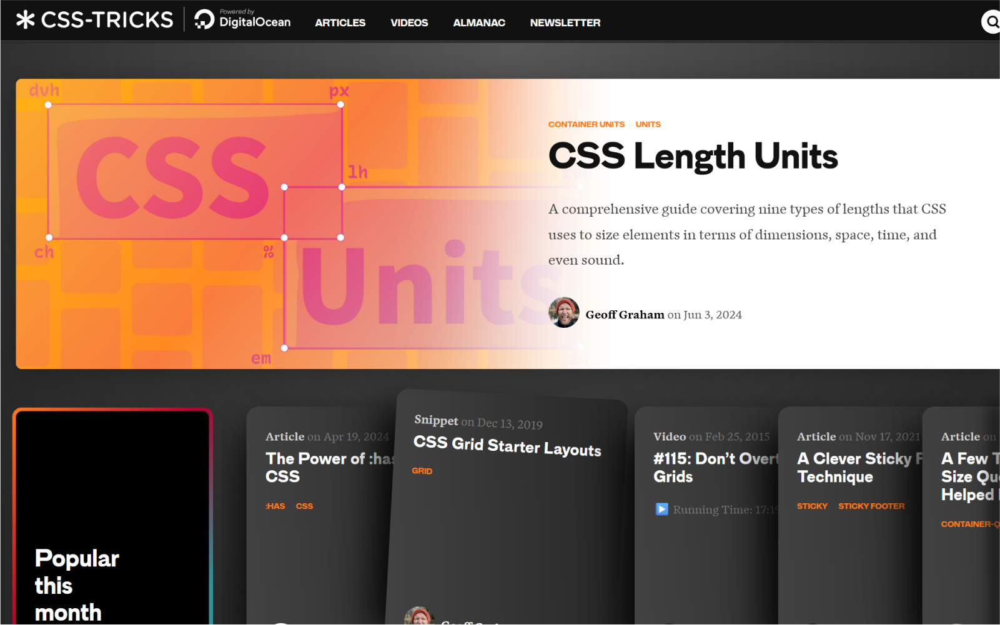
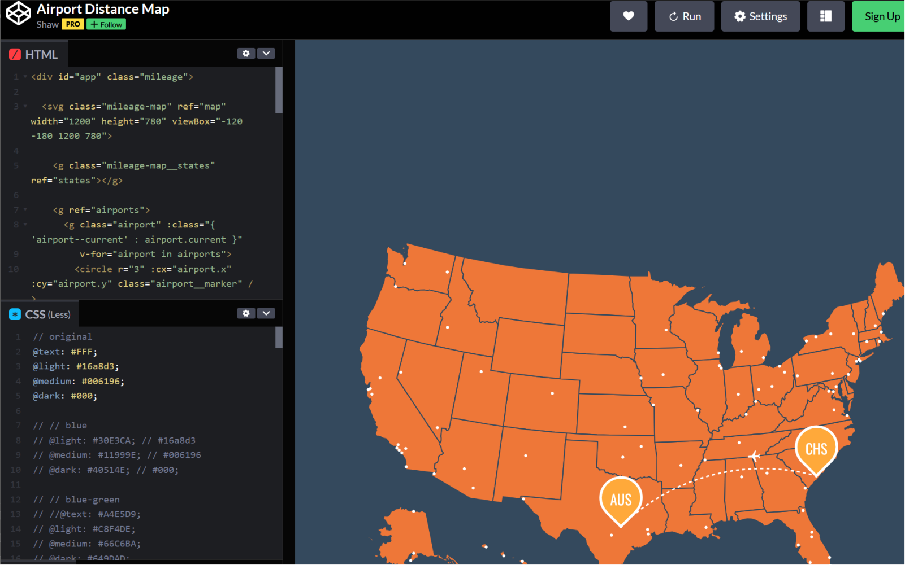
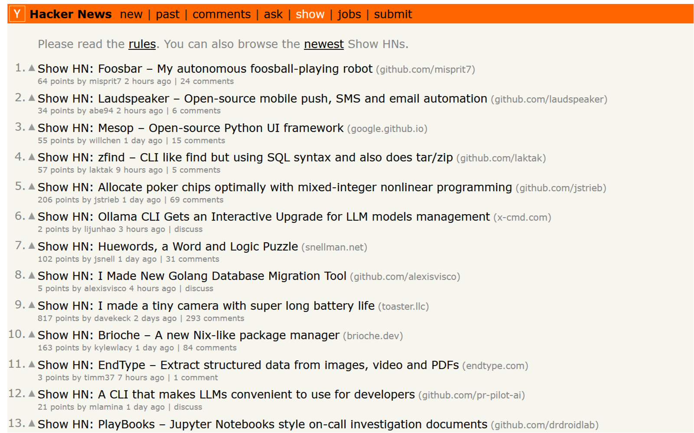
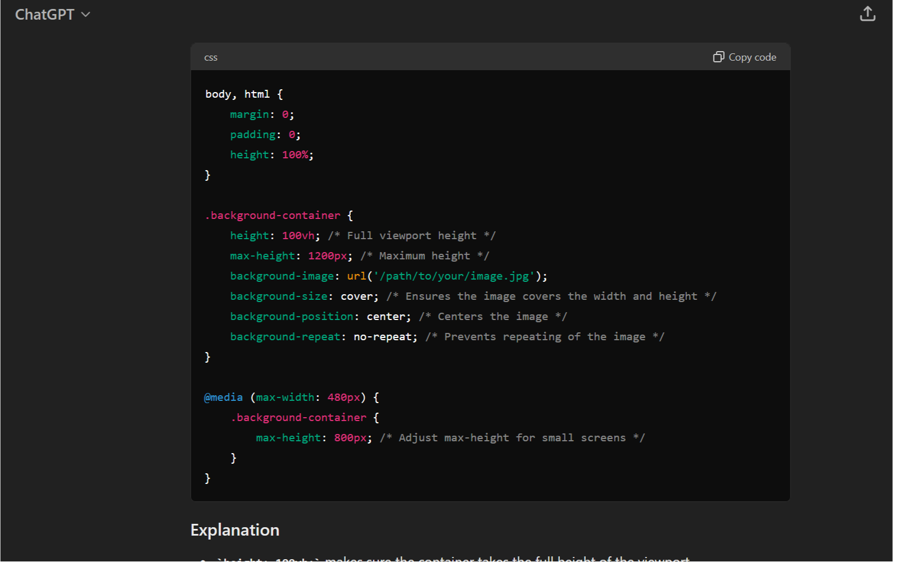

Front-end Resources
June 5th, 2024
Bellevue, WA
One of the things that I've been spending my spare time on these days is learn and exploring web front end development. It's fascianting to see the design happend on the DOM. Elements flex and wrap in real-time. Micro-interactions and animations react and give feedback as you interact with them.
As someone who designs a lot of websites and web apps, it's interesting to be also building out those visuals in code rather than with vector graphics. I've still got a long way to go and consider myself more of an enthusiastic amature than any level of professional front-end code wrangler.
Here are some of my favorite resources to learn and be inspired.
Resources
Smashing Magazine
Smashing Magazine One of the first websites that introduced me to web design and development back in the early 2010s. Smashing Magazine has grown as the web has grown past the early days of HTML3. This site is full of articles, tutorials, and reviews of the latest front-end technologies.
Codrops
Codrops Codrops is a website full of really cool demos and examples of front-end interactions that constantly amaze me. I find a lot of inspiration and learning from checking out both the demos and the showcases of work by other talent folks around the web.
CSS-Tricks
CSS-Tricks CSS-Tricks is one of my most visited sites. I find the way they break down CSS concepts to be the best and easiest to understand. Lots of examples and very in depth coverage of even the newest CSS updates. The Flexbox page has been a life saver more times than I can count.
Codepen.io
Codepen.io Oftentimes, when I'm investigating how to debug things, it's very helpful to have a sandbox to see how things work. Codepen allows users to build and run instances of front-end code. I use this to adjust and try out code before I incorperate it on my projects.
Hacker News : Show
Hacker News : Show A great source of inspiration, I love checking out the projects that other folks have built. A lot of them are way beyond my abilities or even comprehenshion but never fails to at least learn a thing or two.
Chat GPT
Chat GPT This is my newest partner in crime. Chat GPT is like a very knowledgable resource that can help generate some basic code structures. It's primary use for me is to help me understand Javascript structure and semantics, very quick and better than looking at old examples on Stackoverflow.
References
- Smashing Magazine articles, tutorials, and reviews of the latest front-end technologies.
- Codrops demos and showcase of some really impressive front-end interactions
- CSS-Tricks a knowledge base and references of CSS.
- Codepen.io a sandbox to try out new stuff without having too much setup.
- Hacker News : Show see what other folks are building online.
- Chat GPT a readily available resource that helps with structure and semnatics.